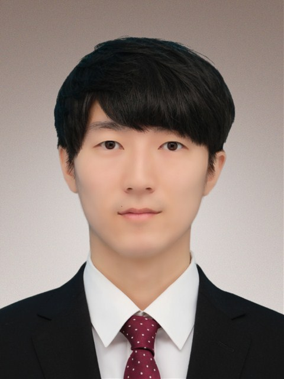

Profile

- 氏名
- 井上皓太
- 最終学歴
- デジタルハリウッド大学・デジタルコミュニケーション学部・デジタルコンテンツ学科卒業
- 出身地
- 青森県(青森→千葉→長野→北海道→東京)
- 職務経歴
-
日本交通株式会社では入社以来約半年間、東京23区、三鷹市、武蔵野市エリアの
タクシードライバーとして営業をしておりました。
2022年10月から部署が異動になり、現在まで虎ノ門病院駐在で車両誘導、 ドア サービスなどを行うディスパッチャーに携わっています。 - 自己PR
-
学生時代、映像を専攻しており、特にCM制作に力を入れていまして、
ゼミでは企画、撮影、編集など多岐に渡り携わっておりました。
タクシードライバー業務において、１対１で不特定多数の方との密な接客
が求められる中で、多くの方への対応、接客スキルを得られました。
長時間労働から集中力、忍耐力を得られました。